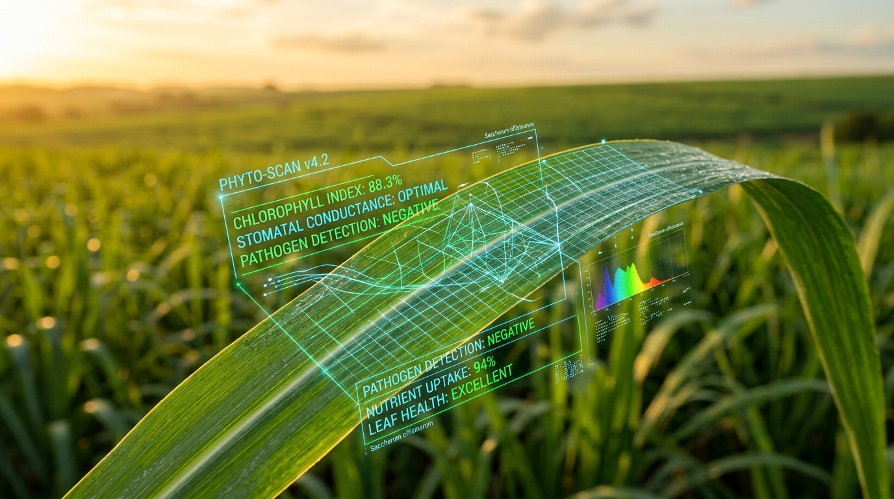

SugarVision
Inteligência Artificial & Sanidade Vegetal de Precisão
Transformando perdas de safra em economia milionária com Visão Computacional no canavial
Identificamos Ferrugem e fitopatologias na cana-de-açúcar em menos de 1 segundo através de fotos foliares no campo, viabilizando contenção no D-Zero e reduzindo em até 28% o gasto com defensivos.

0.78s de Resposta no Campo
Processamento instantâneo via algoritmos matemáticos leves de cor e textura.
Foco nas Pústulas de Ferrugem
Distinção precisa entre tecido sadio e as primeiras lesões do fungo Puccinia.
Proteção de ATR e TCH
Preserva até R$ 2.400/ha em teor de sacarose e biomassa colhida.
O Brasil é o maior produtor global de cana (+650M ton/ano e 9,5M ha). A Ferrugem causa quebras históricas de 30% a 70% na produtividade.
Classificador SVM RBF Otimizado baseado em 35 descritores matemáticos de cor (ExG, ExR, HSV) e textura de pústula (GLCM Haralick).
Cada dia de atraso no controle da ferrugem custa R$ 80 a R$ 140/ha em sacarose perdida. O SugarVision viabiliza contenção precoce.
Abordagem desenhada para integração direta nas rotinas de monitoramento agronômico de usinas e cooperativas.
🛡️ 1. Proteção do ATR Foliar
A ferrugem destrói o parênquima clorofiliano. O diagnóstico ágil impede o colapso da taxa de fotossíntese e sacarose.
🌱 2. Redução de Insumos Químicos
Economia comprovada de até 28% no uso de fungicidas, concentrando aplicações nos talhões efetivamente infectados.
📊 3. Decisão Baseada em Dados
Substituição da amostragem visual subjetiva por métricas estatísticas auditáveis (ExG, ExR e textura Haralick).